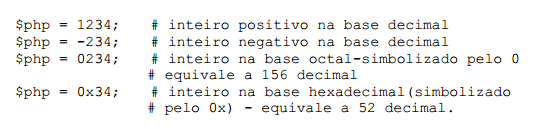
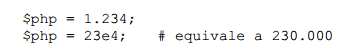
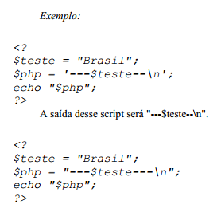
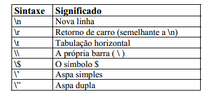
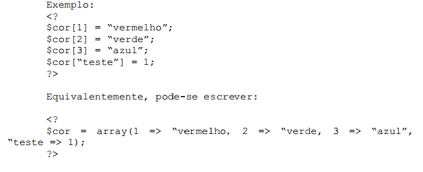
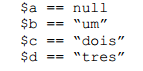
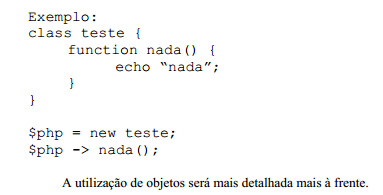
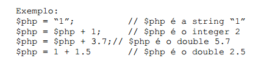
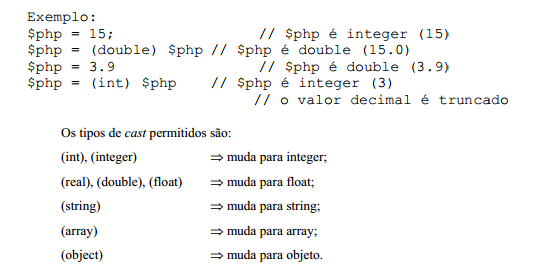

Tipos
Tipos SuportadosPHP suporta os seguintes tipos de dados:
- Inteiro
- Ponto flutuante
- String
- Array
- Objeto
PHP utiliza checagem de tipos dinâmica, ou seja, uma variável pode conter valores de diferentes tipos em diferentes momentos da execução do script. Por este motivo não é necessário declarar o tipo de uma variável para usá-la. O interpretador PHP decidirá qual o tipo daquela variável, verificando o conteúdo em tempo de execução. Ainda assim, é permitido converter os valores de um tipo para outro desejado, utilizando o typecasting ou a função settype (ver adiante).
Inteiros (integer ou long)Uma variável pode conter um valor inteiro com atribuições que sigam as seguintes sintaxes:
A diferença entre inteiros simples e long está no número de bytes utilizados para armazenar a variável. Como a escolha é feita pelo interpretador PHP de maneira transparente para o usuário, podemos afirmar que os tipos são iguais.
Números em Ponto Flutuante (double ou float)Uma variável pode ter um valor em ponto flutuante com atribuições que sigam as seguintes sintaxes:
 StringsStrings podem ser atribuídas de duas maneiras:
a) utilizando aspas simples ( ' ) - Desta maneira, o valor da variável será exatamente o texto contido entre as aspas (com exceção de \\ e \' - ver tabela abaixo)
b) utilizando aspas duplas ( " ) - Desta maneira, qualquer variável ou caracter de escape será expandido antes de ser atribuído.
A saída desse script será "---Brasil--" (com uma quebra de linha no final).
A tabela seguinte lista os caracteres de escape:
 ArraysArrays em PHP podem ser observados como mapeamentos ou como vetores indexados. Mais precisamente, um valor do tipo array é um dicionário onde os índices são as chaves de acesso. Vale ressaltar que os índices podem ser valores de qualquer tipo e não somente inteiros. Inclusive, se os índices forem todos inteiros, estes não precisam formar um intervalo contínuo
Como a checagem de tipos em PHP é dinâmica, valores de tipos diferentes podem ser usados como índices de array, assim como os valores mapeados também podem ser de diversos tipos.
 ListasAs listas são utilizadas em PHP para realizar atribuições múltiplas. Através de listas é possível atribuir valores que estão num array para variáveis. Vejamos o exemplo:
Exemplo:
list($a, $b, $c) = array(“a”, “b”, “c”);
O comando acima atribui valores às três variáveis simultaneamente. É bom notar que só são atribuídos às variáveis da lista os elementos do array que possuem índices inteiros e não negativos. No exemplo acima as três atribuições foram bem sucedidas porque ao inicializar um array sem especificar os índices eles passam a ser inteiros, a partir do zero. Um fator importante é que cada variável da lista possui um índice inteiro e ordinal, iniciando com zero, que serve para determinar qual valor será atribuído. No exemplo anterior temos $a com índice 0, $b com índice 1 e $c com índice 2. Vejamos um outro exemplo:
$arr = array(1=>”um”,3=>”tres”,”a”=>”letraA”,2=>”dois); list($a,$b,$c,$d) = $arr;
Após a execução do código acima temos os seguintes valores:
Devemos observar que à variável $a não foi atribuído valor, pois no array não existe elemento com índice 0 (zero). Outro detalhe importante é que o valor “tres” foi atribuído à variável $d, e não a $b, pois seu índice é 3, o mesmo que $d na lista. Por fim, vemos que o valor “letraA” não foi atribuído a elemento algum da lista, pois seu índice não é inteiro.
Os índices da lista servem apenas como referência ao interpretador PHP para realizar as atribuições, não podendo ser acessados de maneira alguma pelo programador. De maneira diferente do array, uma lista não pode ser atribuída a uma variável, servindo apenas para fazer múltiplas atribuições através de um array.
ObjetosUm objeto pode ser inicializado utilizando o comando new para instanciar uma classe para uma variável.
 BooleanosPHP não possui um tipo booleano, mas é capaz de avaliar expressões e retornar true ou false, através do tipo integer: é usado o valor 0 (zero) para representar o estado false, e qualquer valor diferente de zero (geralmente 1) para representar o estado true.
Transformação de tiposA transformação de tipos em PHP pode ser feita das seguintes maneiras:
CoerçõesQuando ocorrem determinadas operações (“+”, por exemplo) entre dois valores de tipos diferentes, o PHP converte o valor de um deles automaticamente (coerção). É interessante notar que se o operando for uma variável, seu valor não será alterado.
O tipo para o qual os valores dos operandos serão convertidos é determinado da seguinte forma: Se um dos operandos for float, o outro será convertido para float, senão, se um deles for integer, o outro será convertido para integer.
Como podemos notar, o PHP converte string para integer ou double mantendo o valor. O sistema utilizado pelo PHP para converter de strings para números é o seguinte:
- É analisado o início da string. Se contiver um número, ele será avaliado. Senão, o valor será 0 (zero);
- O número pode conter um sinal no início (“+” ou “-“);
- Se a string contiver um ponto em sua parte numérica a ser analisada, ele será considerado, e o valor obtido será double;
- Se a string contiver um “e” ou “E” em sua parte numérica a ser analisada, o valor seguinte será considerado como expoente da base 10, e o valor obtido será double;
A sintaxe do typecast de PHP é semelhante ao C: basta escrever o tipo entre parênteses antes do valor
 Com a função settypeA função settype converte uma variável para o tipo especificado, que pode ser “integer”, “double”, “string”, “array” ou “object”.
Exemplo:
$php = 15; // $php é integer settype($php,double) // $php é double